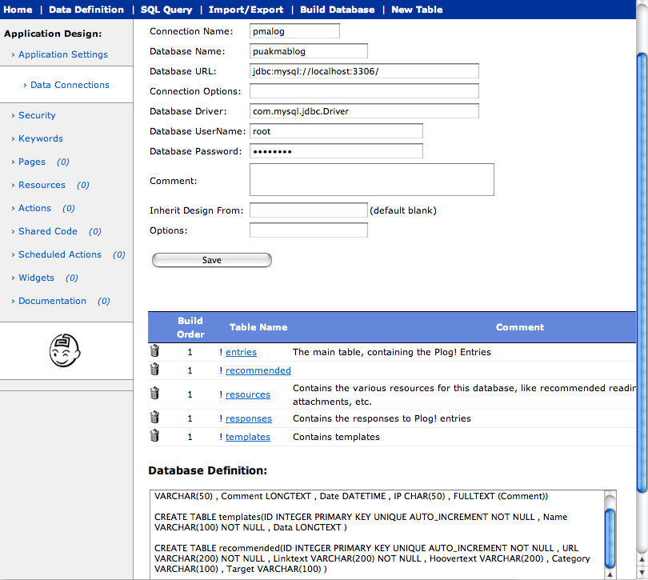

The database settings section is where the references to the application data are stored. This works much like a live data dictionary. Changes can be made quickly to the table definitions then reapplied to the database by clicking the “Build Table” button. Note that this causes the existing table to be dropped and recreated from the definition.
When creating a new application, developers may create a data connection, then table
definitions beneath that connection, then attribute definitions beneath the table definition.
When the data configuration is correct, simply click the “Create Database” button to build
the database, tables and attributes.
